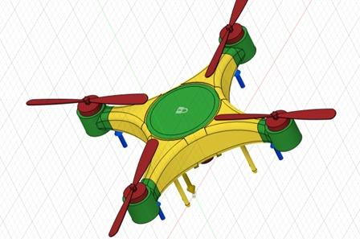
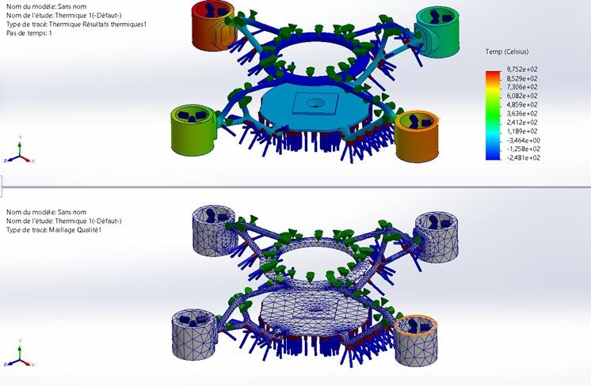
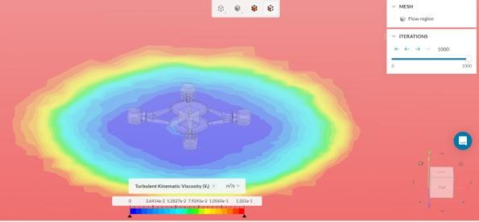
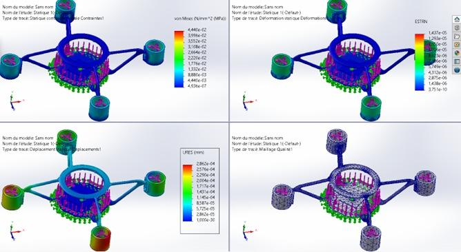
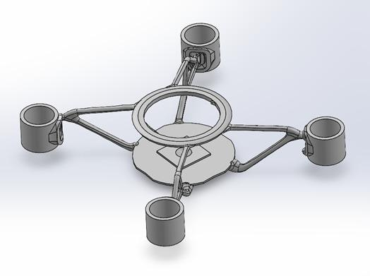
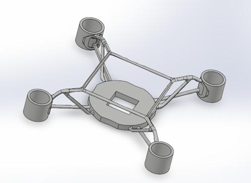
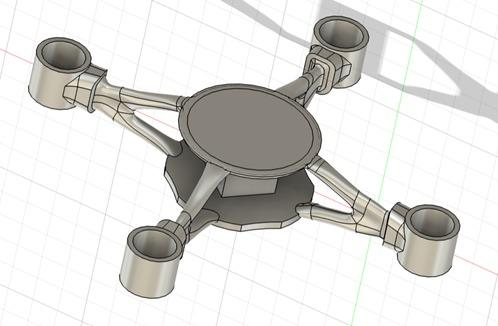
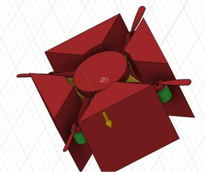

Moins de masse.
Plus d'autonomie.Même ciel sénégalais.
Une démarche d'optimisation topologique pour les UAV quadrirotors moyens (2–10 kg), pensée pour l'agriculture et la surveillance sous le climat sénégalais.

Un ciel encore inaccessible aux drones moyens
Au Sénégal, les UAV quadrirotors moyens sont déjà utilisés pour surveiller les cultures et les frontières. Mais leur autonomie de vol reste courte et leur efficacité énergétique faible — en grande partie à cause d'une masse structurelle trop importante pour la charge qu'ils doivent porter.
Leur conception actuelle ne tient pas compte des conditions spécifiques du contexte africain, notamment les fortes chaleurs, alors que des matériaux plus adaptés existent et que des marges d'optimisation énergétique restent inexploitées. Aucune étude locale ne traite encore cette problématique sous l'angle de l'optimisation structurelle.
« Comment améliorer l'efficacité énergétique — l'autonomie de vol — des UAV quadrirotors moyens par l'optimisation ? »
Sept étapes, une trajectoire
Proposer une démarche d'optimisation pour les UAV moyens à rotor, en minimisant la masse totale tout en maintenant les performances aérodynamiques et structurelles.
- Analyser les espaces de conception existants et les limites des UAV actuellement utilisés au Sénégal
- Modéliser l'UAV de référence
- Réaliser l'optimisation topologique de la structure
- Simuler et valider le comportement mécanique et aérodynamique de l'UAV optimisé
- Comparer les performances avant et après optimisation
- Mener l'idéation — rechercher des solutions potentielles et innovantes
- Proposer un design final en vue de la fabrication
Le modèle de référence
Bras tubulaires, nacelles moteur, train d'atterrissage : ce modèle CAO sert de ligne de base à toute la démarche d'optimisation. C'est lui qu'il faut faire maigrir — sans le rendre plus fragile.

Avant d'optimiser, il faut mesurer
Quatre analyses posent le diagnostic du modèle de référence : comportement structurel (contrainte de von Mises, déformation, déplacement), réponse thermique, qualité de maillage et écoulement aérodynamique (CFD).



Retirer la matière qui ne travaille pas
L'optimisation redistribue la matière selon les lignes de charge réelles : les bras pleins deviennent des treillis, le plateau central s'ajoure. Ce qui ne contribue pas à la tenue structurelle disparaît.




Chaque itération repasse au banc d'essai
Deux nouveaux candidats, plus compacts, sont soumis au même protocole — statique, thermique, aérodynamique — pour confirmer que la perte de masse ne coûte rien en résistance.


Avant / après, en chiffres
| Itération | von Mises max | Déplacement max (URES) |
|---|---|---|
| Treillis initial (validation 05) | 444 MPa | 2,86×10⁻⁴ mm |
| Modèle 1 UAV | 1,86×10⁻² MPa | 1,98×10⁻⁴ mm |
| UAV (affiné) | 1,90×10⁻² MPa | 1,39×10⁻⁴ mm |
| Design final assemblé | 1,02 MPa | 1,07×10⁻² mm |
Une proposition prête pour la fabrication
Plateau ovale, colonne centrale, bras en treillis, nacelles moteur : le design final rassemble les enseignements de chaque itération. Validé en statique et en thermique, il est prêt pour le prototypage.